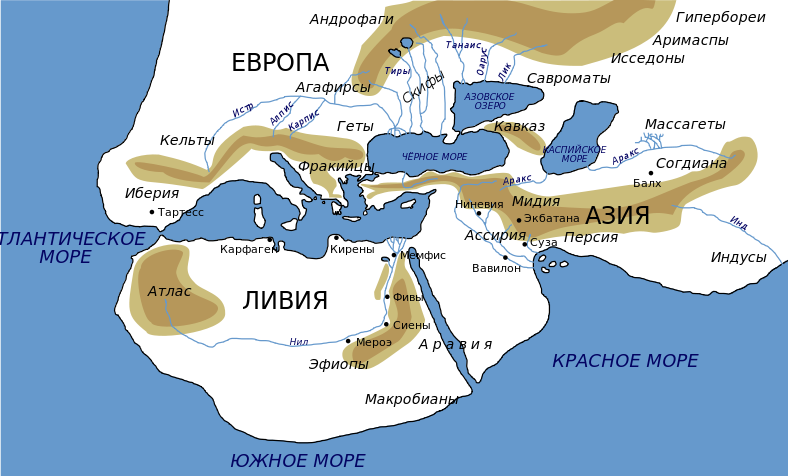
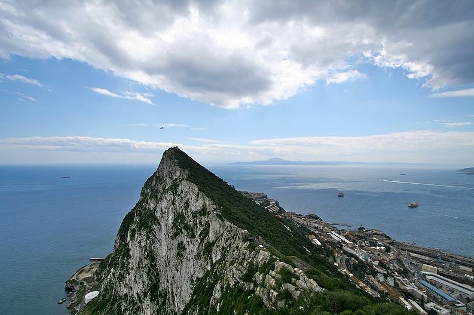
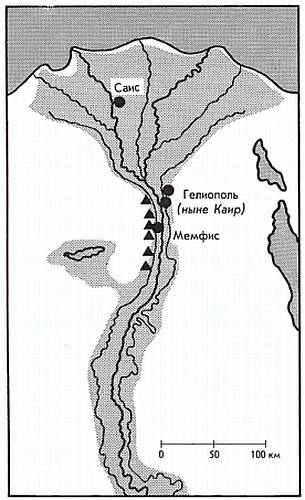
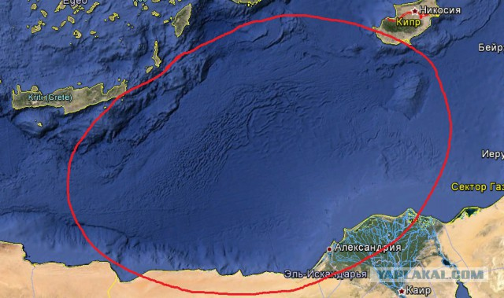
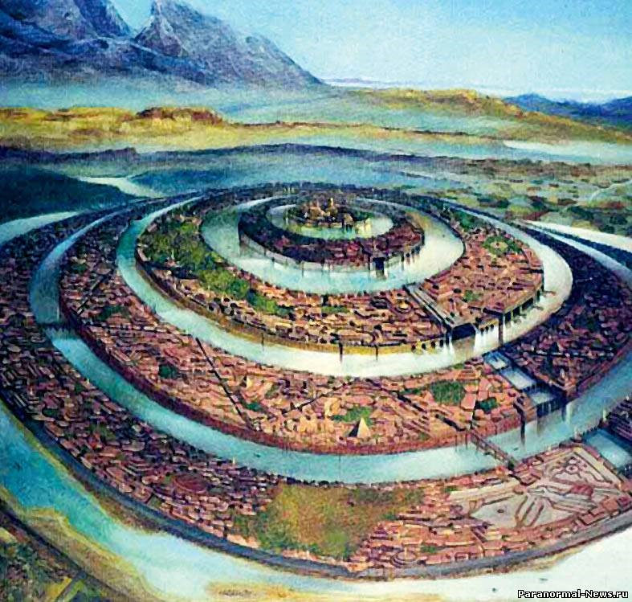
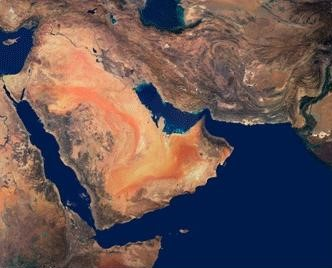
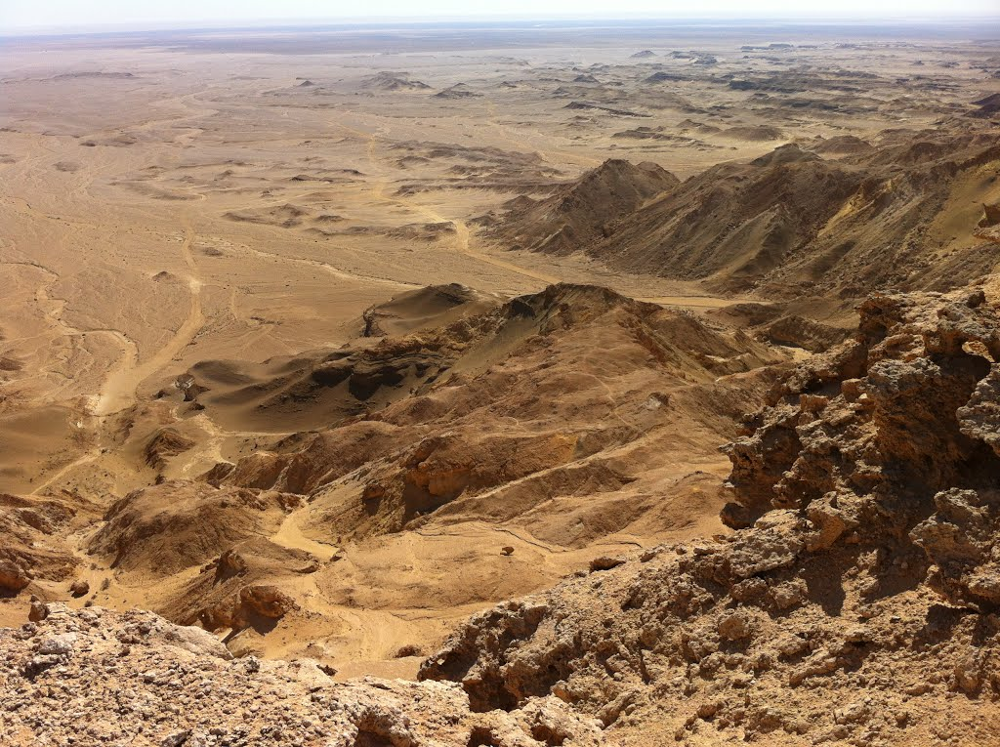

Атлантида не исчезла, она есть и лежит на морской глубине. Об Атлантиде много что было сказано,
написано
тысячи материалов исследований. Историками, археологами, искателями предложено полсотни версий
возможного месторасположения по всему миру (в Скандинавии, в Балтийском море, в Гренландии, Северной
и
Южной Америке, в Африке, Черном, Эгейском, Каспийском море, в Атлантическом океане, Средиземном море
и
так далее), но точного места не названо. – Почему такая путаница?
Начиная разбираться, обнаруживаешь одну закономерность, что все предположения изначально имеют
привязку к
одной какой-нибудь схожести, находке древности, единичного описания, под которую (которые)
впоследствии
«подгонялись материалы». В результате ничего не получалось. Схожесть есть, а Атлантиды найти не
могут.
«Мы пойдем другим путем»!
Поищем Атлантиду иным способом, который в данном случае (судя по известным предложениям), ранее никем
не
применялся. – Вначале возьмем метод исключения, где Атлантиды не могло быть. По мере сужения круга,
будем использовать все «привязки-ориентиры», которые предложены древнегреческим ученым, мудрецом
(428-347 г. до н.э.) Платоном (Аристоклом) в его трудах – «Тимей» и «Критий». В этих документах
единственно и довольно подробно дано описание Атлантиды, её жителей и исторических событий,
связанных с
жизнью легендарного острова.
Аристотель научил меня удовлетворять свой разум, только тем, в чём убеждают меня рассуждения, а
не
только авторитет учителей. Такова сила истины: вы пытаетесь её опровергнуть, но сами ваши
нападки
возвышают её и придают ей большую ценность

Карта мира, как её представляли в Греции во времена Платона, Геродота (IV — V век до
н.э.)
Итак, начнем «рубить концы»
Атлантида не могла находиться ни в каком дальнем уголке мира и даже её не было в Атлантическом
океане. Вы
спросите почему? — Потому, что война (согласно истории повествования) между Афинами и Атлантидой не
могла быть нигде, кроме как в Средиземном море на этом «пятачке цивилизации» в силу ограниченности
развития человечества. Мир велик — но, развитый мал. Чаще и постоянно меж собой воюют ближние
соседи,
нежели дальние. Афины просто не смогли бы со своей армией и флотом достичь пределов Атлантиды, если
бы
она находилась где-то далеко. Вода и огромные расстояния были тому непреодолимым препятствием.
Это заграждение было для людей непреодолимым, ибо судов и судоходства тогда еще не
существовало
В древнегреческой мифологии, возникшей много тысяч лет позже времён гибели Атлантиды, единственно
(!) герой Геракл (по Гомеру в XII веке до нашей эры) совершил по легенде подвиг,
путешествуя на самую дальнюю западную точку света – на край Средиземного моря. «Когда на пути у
Геракла возникли Атласские горы, то он не стал взбираться на них, а пробил себе путь насквозь,
таким
образом, проложив Гибралтарский пролив и соединив Средиземное море с Атлантикой.Эта точка и служила границей для мореплавателей в античную эпоху, поэтому в переносном
смысле «Геракловы (геркулесовы) столбы», — это край света, предел мира. И выражение дойти до
геркулесовых столбов» означает — «дойти до предела».

Гибралтарский пролив сегодня – место до которого дошел Геракл.
На переднем плане — Гибралтарская скала на краю материка Европа, а на заднем плане на берегу Африки
видна гора Джебель-Муса в Марокко.
То, какого западного предела земли достиг Геракл («края света») — было недостижимо прочим смертным.
Таким
образом, Атлантида была ближе к центру древней цивилизации – она была в Средиземном море. А, где
именно?
Геракловых Столпов (согласно повествованию Платона, за которыми лежал остров Атлантида) в Средиземном
море на то время насчитывали семь пар! (Гибралтар, Дарданеллы, Босфор, Керченский пролив, Устье Нила
и
др.). Столпы располагались у входов в проливы, и все имели одинаковые названия – Геракловы (позднее
латинское имя — Геркулесовы). Столпы служили для древних мореплавателей ориентирами и маяками.
Прежде всего, вкратце припомним, что, согласно преданию, девять тысяч лет тому назад была война
между
теми народами, которые обитали по ту сторону Геракловых столпов, и всеми теми, кто жил по сю
сторону: об этой войне нам и предстоит поведать… Как мы уже упоминали, это некогда был остров,
превышавший величиной Ливию и Азию (не всю их географическую территорию, а скорее обжитые в
древности участки), ныне же он провалился, вследствие землетрясений и превратился в непроходимый
ил,
заграждающий путь мореходам, которые попытались бы плыть от нас в открытое море, и делающий
плавание
немыслимым
Эта информация об Атлантиде, датируемая VI веком до н.э. исходила от египетского жреца Тимея
из
города Саиса (расположенного на побережье Африки, в западной дельте Нила), нынешнее
название этого селения Са эль-Хагар.

Когда Тимей говорил, что преграда от остатков затонувшей Атлантиды преграждала путь «от нас в
открытое
море», то говоря о нас (о Египте), этим ясно свидетельствовал о нахождении Атлантиды — то есть в
направлении следования из египетского устья Нила в широкие воды Средиземного моря.
Геркулесовыми столпами в древности называли также и вход в главное судоходное (западное) устье Нила,
прозванное устьем Иракла, то есть Геркулесовым, где находился город Ираклеум и был храм в честь
Геркулеса.
Со временем ил и плавучий материал от затонувшей Атлантиды разнесло по морю, а сам остров ещё глубже
ушел
в пучину. Поскольку же за девять тысяч лет случилось много великих наводнений (а именно
столько
лет прошло с тех времен до Платона), земля не накапливалась в виде сколько-нибудь
значительной
отмели, как в других местах, но смывалась волнами и потом исчезала в пучине.
(Платон, «Критий»).
Далее исключаем другие, невозможные места расположения
Атлантида не могла находиться в Средиземном море севернее острова Крит.
Сегодня в том районе присутствует бессчетное множество рассеянных по акватории мелких островов, что
не
соответствует повествованию о затоплении (!), и этим самым фактом исключает всю данную территорию.
Но
даже не это главное. — Площади для размещения Атлантиды (согласно описанию её размеров) в море
севернее
Крита не доставало бы.
Экспедиция известного исследователя морских глубин французского ученого-океанографа Жак-Ив Кусто в
район
севернее Крита на периферии островов Тира (Стронгеле), Фера обнаружили останки древнего затонувшего
города, но из сказанного выше следует, что он скорее принадлежит другой цивилизации, нежели
Атлантиде.
В архипелаге островов Эгейского моря известны землетрясения, катастрофы, связанные с вулканической
деятельностью, приведшие к локальному опусканию земли и они по новым свидетельствам происходят в
наше
время. — Например, затонувшая совсем недавно, средневековая крепость в Эгейском море недалеко от
города
Мармарис в бухте на побережье Турции.

Сужая круг поиска, приходим к заключению, остается одно, что Атлантида могла быть только в
одном
месте против Устья Нила – между островами Крит, Кипр и северным побережьем Африки.
Она там сегодня на глубине и лежит, провалившись в глубокую котловину моря.
Провал почти овальной акватории с наплывами от берегов, горизонтальной морщинистостью (от сползания)
осадочных пород к центру «воронки» хорошо заметен по интернет-обзору дна моря из космоса. Дно в этом
месте напоминает яму, присыпанную сверху мягкой осадочной породой, нет под ней твердой «корочки
материковой мантии». Только видна на теле Земли незаросшая твердью — впадина внутрь.
Египетский жрец Тимей, в своём рассказе о местонахождении ила от затопленной Атлантиды дает привязку
к
Геракловым столпам (логично для него было сказать — ближайших к нему), расположенных в устье
западного
Нила.
В другом случае (позже уже будучи в Греции) при описании Платоном могущества Атлантиды речь уже идёт
о
других столпах, как выше сказано в средиземноморье их насчитывали тогда семь.
Когда Платон излагал текст сочинения (по пересказу Солона и Крития), египетского жреца Тимея
(первоисточника повествования) к тому времени не было уже 200 лет, и уточнить информацию о каких
столпах
идет разговор — было не у кого.
Потому возникла и последующая путаница с местом расположения Атлантиды
Ведь по свидетельству наших записей, государство ваше (Афины) положило предел дерзости несметных
воинских сил, отправлявшихся на завоевание всей Европы и Азии, а путь державших от
Атлантического моря. […] На этом-то острове, именовавшемся Атлантидой, возникло
удивительное по величине и могуществу царство, чья власть простиралась на весь остров, на многие
другие острова и на часть материка, а сверх того, по эту сторону пролива они
овладели Ливией (северной Африкой) вплоть до Египта и Европой вплоть до Тиррении (западное
побережье
Италии).
Море, омывавшее остров Атлантиду (между Критом, Кипром и Египтом), называлось в древности
Атлантическим,
оно находилось в акватории Средиземного моря, так же как и современные моря: Эгейское, Тирренское,
Адриатическое, Ионическое.
Впоследствии из-за ошибки в привязке Атлантиды не к Нильским, а к Гибралтарским столпам, название
«Атлантическое» море распространилось автоматически на океан за проливом. Некогда внутреннее
Атлантическое море из-за неточности толкования рассказа Тимея и описания (Платона, Крития или
Солона) —
стало Атлантическим океаном. Как говорит русская пословица: «Заблудились в трех соснах» (точнее в
семи
парах столпов). Когда ушла в морскую бездну Атлантида, то вместе с ней исчезло и Атлантическое море.
Тимей, повествуя историю Атлантиды, отметил, что победа Афин принесла свободу от рабства всем
остальным
народам (в том числе и египтянам), кто ещё не был порабощен Атлантами – «по эту сторону
Геракловых столпов», говоря о себе – о Египте.
Именно тогда, Солон, государство ваше явило всему миру блистательное доказательство своей
доблести и
силы: всех, превосходя твердостью духа и опытностью в военном деле, оно сначала встало во главе
эллинов, но из-за измены союзников оказалось предоставленным самому себе, в одиночестве
встретилось
с крайними опасностями и все же одолело завоевателей и воздвигло победные трофеи. Тех, кто еще
не
был порабощен, оно спасло от угрозы рабства; всех же остальных, сколько ни обитало нас
по
эту сторону Геракловых столпов, оно великодушно сделало свободными. Но позднее,
когда
пришел срок для невиданных землетрясений и наводнений, за одни ужасные сутки вся ваша воинская
сила
была поглощена разверзнувшейся землей; равным образом и Атлантида исчезла, погрузившись в
пучину.
После этого море в тех местах стало вплоть до сего дня несудоходным и недоступным по причине
обмеления, вызванного огромным количеством ила, который оставил после себя осевший остров.
Ещё более можно уточнить место Атлантиды из описания самого острова.
Посейдон, получив в удел остров Атлантиду…, примерно вот в каком месте: от моря и до
середины
острова простиралась равнина, если верить преданию, красивее всех прочих равнин и
весьма плодородная.
Весь этот край лежал очень высоко и круто обрывался к морю, но вся равнина, окружавшая город
(столицу) и сама окруженная горами, которые тянулись до самого моря, являла собой ровную
гладь, в длину три тысячи стадиев (580 км.), а в направлении от
моря к
середине — две тысячи (390 км.). Вся эта часть острова была обращена к
южному ветру, а с севера закрыта горами. Эти горы восхваляются преданием за то, что
они
по множеству, величине и красоте превосходили все нынешние. Равнина… являла собой продолговатый
четырехугольник, по большей части прямолинейный.

Итак, следуя описанию – примерно до середины острова Атлантида простиралась прямоугольная равнина
размерами 580 на 390 километров, открытая к югу и закрытая с севера большими и высокими горами.
Вмещая
эти размеры в географическую карту севернее устья Нила, получим, что южной частью Атлантида могла
вполне
примыкать к Африке (около ливийских городов Тобрук, Дерна и египетских городов на побережье западнее
Александрии), а её северная гористая часть могла быть (но, не факт) — островом Крит (на западе ), и
Кипр
(на востоке).
В пользу того, что Атлантида в более ранние времена (чем её упоминание в древнеегипетских папирусах),
а
именно десятки тысяч лет назад была соединена с Африкой — говорит повествование о животном мире
острова.
Даже слонов на острове водилось великое множество, ибо корму хватало не только
для
всех прочих живых существ, населяющих болота, озера и реки, горы или равнины, но и для этого
зверя,
из всех зверей самого большого и прожорливого
Следует принять во внимание и то, что с окончанием ледникового периода с началом таяния северных
ледников
уровень мирового океана поднялся на 100-150 метров и вероятно часть суши, некогда соединявшая
Атлантиду
и материк, была постепенно затоплена. Слоны и жители острова атланты (по имени их царя Атланта),
пришедшие сюда ранее из глубин Африки остались на большом острове в окружении моря.
Атланты были обыкновенными людьми современного вида, а не четырехметровыми гигантами, иначе бы
эллинам из
Афин было бы их не одолеть. Островное, изолированное положение жителей побудило цивилизацию к
обособленному активному, опережающему внешних воюющих варваров, развитию (благо всё необходимое на
острове было).
На Атлантиде (в её столице, похожей на сопку потухшего вулкана) из-под земли текли
горячие источники минеральной воды. Это говорит о высокой сейсмической активности
территории, находившейся на «тонкой» мантии земной коры… родник холодной и родник горячей воды,
которые давали воду в изобилии, и притом удивительную как на вкус, так и по целительной
силе. (Платон, «Критий»).
Не буду сейчас предполагать, что послужило причиной внутренней «икоты» Земли, в результате которой
Атлантида за сутки, а потом ещё глубже – опустилась в котловину Средиземного моря. Но надо обратить
внимание, что ровно в том месте по дну Средиземного моря проходит граница разлома между Африканской
и
Европейской материковой тектонической плитой.
Глубина моря там очень большая – порядка 3000-4000 метров. Возможно, что мощный удар гигантского
метеорита в Северной Америке в Мексике, который по данным национальной академии наук США произошёл
13
тысяч лет назад (примерно в то самое время) и вызвал инерционную волну и подвижку плит в
средиземноморье.
Так же как материковые плиты, наползая друг на друга, ломая края, вздыбают горы — этот же процесс, но
в
обратную сторону при расхождении образует проседание и глубокие впадины.
Африканская плита чуть-чуть отошла от европейской, и этого было вполне достаточно для опускания
Атлантиды
в бездну моря.
О том, что Африка в истории Земли ранее уже отодвигалась от Европы и Азии, наглядно свидетельствует
огромный межконтинентальный разлом, идущий через Средиземное море. Разлом хорошо виден на
географической
карте по линиям (морям) раскола в земной коре, которые идут в направлениях – Мертвое море, залив
Акаба,
Красное море, Аденский, Персидский и Оманский заливы.

Как континент Африка отходит от Азии, образуя в местах разрыва вышеперечисленные моря и
заливы.
Возможно, что нынешний остров Крит ранее и был та самая северная, высокая гористая часть
Атлантиды, которая не провалилась в бездну моря, а, отколовшись, удержалась на «европейском
материковом карнизе».
С другой стороны, если посмотреть на Крит по географической карте, то он стоит
не на самом обрыве мантии европейского материка, а примерно в 100 километрах от
котловины Средиземного (Атлантического) моря. Это значит, что катастрофического разлома Атлантиды по
нынешней береговой линии острова Крит не было.
Но здесь надо учесть и то, что с тех времен уровень морей от таяния ледников поднялся на 100-150
метров
(или более). Возможно, что Крит и Кипр как самостоятельные единицы входили в архипелаг островной
Атлантиды.
Историки, археологи пишут: Раскопки на Крите показывают, что даже,
спустя четыре-пять тысячелетий после предполагаемой гибели Атлантиды жители этого
средиземноморского
острова стремились селиться подальше от берега. (Память предков?). Неведомый страх гнал их в
горы.
Первые центры земледелия и культуры располагаются также в некотором отдалении от моря …
О бывшей близости расположения Атлантиды к Африке и к устью Нила косвенно свидетельствует и обширная
впадина Каттара в Северной Африке в Ливийской пустыне в 50 км. от побережья Средиземного моря,
западнее
египетского города Александрия. Впадина Каттара глубиной минус 133 метра ниже уровня
моря.
Есть и другая низина на линии тектонического разлома — Мертвое море (минус 395 метров) в Израиле. Они
свидетельствуют о некогда совершившейся общей для всех территориальной катастрофе связанной с
проседанием больших участков земли от расхождения в разные стороны Европейской и Африканской
материковых
плит.

Огромная впадина Каттара близ Средиземного моря в Египте.
Что дает установление точного места положения Атлантиды?
Впадина средиземноморья на месте бывшей Атлантиды слишком глубока.
Вначале поднявшийся, а потом осевший на дно ил и последующие осадочные отложения несколько засыпали
Атлантиду. Золотая столица с её несметными сокровищами в храме Посейдона оказалась на большой
морской
глубине.
Поиски столицы Атлантиды в южной части Средиземного моря в «треугольнике» между островами Крит, Кипр,
устье Нила принесут в «копилку» мировой истории человечества полезный результат, но для этого нужны
исследования глубоководными аппаратами. Для поиска столицы – для внимательного читателя есть
и
ориентиры…
Например, итальянские исследовали-океанографы летом 2015 г. на шельфе острова Пантеллерия,
находящегося,
примерно, по середине между Сицилией и Африкой, на глубине 40 метров на дне моря обнаружили
гигантскую
рукотворную колонну 12-ти метров длинной массой 15 тонн, разломанную пополам. На колонне видны следы
сверления отверстий. Возраст её оценивают около 10 тысяч лет (сопоставим с эпохой Атлантов). Также
водолазы нашли остатки мола — гряду камней размером в половину метра, выложенных по прямой линии,
защищавших вход в древнюю судовую гавань.
Эти находки говорят, что поиски столицы Атлантиды не безнадежны.
Вдохновляет и другое, что путаница с «Геракловыми столпами» успешно разрешена, и местонахождение
Атлантиды наконец-то установлено.
Уже сегодня ради исторической правды — средиземноморской котловине, на дне которой
лежит
легендарный остров в память об Атлантиде и её жителях, должно и можно вернуть её древнее
название — Атлантического моря. Это и будет то первое, важное, мировое событие в поиске
и
находке Атлантиды.